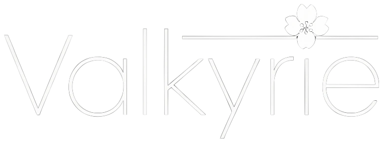

↝
Flow Combat
Плавная боёвая система с Legacy, Modern и Hybrid timing. Настройте ритм под себя.
Подробнее ↗
VALKYRIE CLIENT Скачать ↗Valkyrie — аккуратный Minecraft-клиент для тех, кто ценит контроль, чистый интерфейс и ощущение полного присутствия в игре.
SAKURA PORTAL
Ready to playНабор инструментов, собранный вокруг вашей игры — а не поверх неё.
Плавная боёвая система с Legacy, Modern и Hybrid timing. Настройте ритм под себя.
Подробнее ↗Sakura Combat Bloom, Target Glow и живая атмосфера мира.
Подробнее ↗Видьте важное: угрозы, снаряды, хранилища и траектории.
Подробнее ↗Колонки, редактор HUD и Focus Mode без визуального шума.
Подробнее ↗Valkyrie не пытается заменить игру. Мы убираем трение между вами и моментом, оставляя только точные инструменты и спокойный контроль.
Узнать больше о проекте →Откройте чистый Sakura-интерфейс и соберите свой способ играть.
Скачать Valkyrie ↓Valkyrie Client 0.9.0-beta · GPL-3.0-or-later